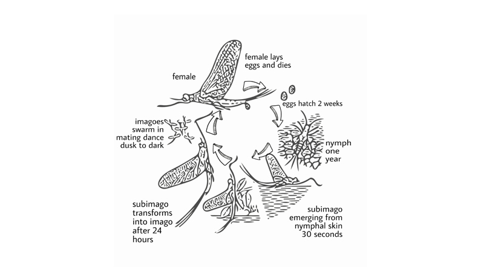

Life Of A Day
September 10, 2020 4:47pm IST You might have heard about some insects (especially mayflies) having life spans as short as just one day. You might think about how they can live for just a day and complete all the tasks that life gives; tasks like growing, becoming an adult, reproducing, etc. which every individual of a species does or tries to do. This sounds hard, right? So let’s try to find out if it is true that there are insects (especially mayflies) with such a short life span.
Some insects have a short life span and are grouped under the order Ephemeroptera. The word Ephemeroptera is derived from the Greek ‘ephemera, ’ meaning short-lived and ‘ptera’ meaning wings. They are commonly known as mayflies. You may also know them by the other common names like shadfly, sandfly, dayfly, and fishfly. They are closely related to dragonflies but are smaller than dragonflies.
Mayflies life cycle consist of four stages: EGG ü°™ NYMPH ü°™ SUBIMAGO ü°™ IMAGO
Female mayflies lay their eggs in water. Depending on the species, they can lay their egg on freshwater (mostly) or brackish water. These eggs often hatch in a period of about two weeks. The nymph stage can last from 2 weeks to 2 years. Mostly the nymph stage can last as long as a year or so with about 50 moults that occur depending on the species and environment. By the time the nymph stage is converted, it turns into the subimago stage. After a few minutes or sometimes even several days (but usually overnight), the subimago sheds its skin and moves to the adult stage, i.e. the imago stage. The imago is similar in appearance with the subimago but is pale in color. Soon the male and female adult mayflies mate, and the female mayflies lay their eggs.
The adult mayflies have no functional mouthparts, and hence they cannot eat anything. The adult’s purpose is to mate and pass their genes to the next generation. Thus, the adult stage is short-lived at just about a few days, but the nymph stage can be as long as two years. This means that mayflies don’t live for just a day; it’s only the adult form that survives for a few days because of the lack of ability to eat.
Author :
Ashwin Sharma
Related Articles
Camouflage: A strategy for survival
November 12, 2020 6:45pm IST
If we look into the Oxford dictionary for the meaning of camouflage we will get: “the way in which an animal’s colour or shape matches what is around or near it and makes it difficult to see”. They use it as a defensive mechanism as well as an offensive mechanism.

Cancer And Its Prevelence in Arthopods
November 12, 2020 4:55pm IST
Cancer is one of the most dreaded diseases in humans. But are there any pieces of evidence of cancerous growths in arthropods? Do the most diverse group of creatures on earth suffer from tumorous growths too? Let’s find out.

How Ants Moves In Ques ?
November 12, 2020 4:47pm IST
We have all seen the ants walking along a line towards a food source. But have you thought about how they could be so precise in their movement? Are there any traffic ants or road maker ants that make sure that ants walk in a designated path? They sure don’t have GPS to navigate their way around.